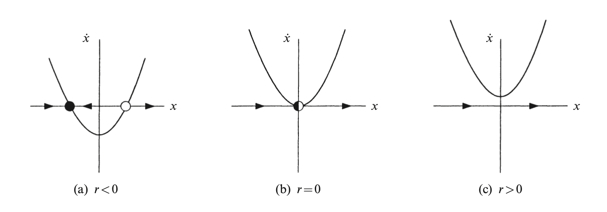

La idea
Las redes vasculares, el folla, los hongos y las redes eléctricas transportan flujo a través de redes. Si cada arista ajusta su conductancia según el flujo que lleva, la red termina organizándose para disipar menos energía. En Physarum polycephalum esto ocurre mientras la red crece.
Los loops se entienden como un conjunto de múltiples caminos para llegar de un nodo A a un nodo B.
En nuestras simulaciones aparecen y desaparecen loops. Esta página explica un modelo mínimo para entender cuándo un loop sobrevive y cuándo colapsa a un árbol.
El modelo mínimo
Dos conductancias en paralelo reciben un flujo total constante Q. Cada una relaja hacia su óptimo, que depende del flujo que transporta. A la primera la dejamos en el techo, C1 = Cmax, y la segunda es C2 = u Cmax. Queda un solo grado de libertad.
Como las dos están en paralelo, Q2 = Q u/(1+u). Con τ = 1:
Todo el sistema depende de dos números: κ (que baja al subir el techo Cmax) y el exponente α.
Una bifurcación saddle-node
Los puntos fijos cumplen r(u) = u, con r(u) = κ(u/(1+u))α. Para 1 < α < 2 la curva puede quedar por debajo de la diagonal, tocarla o cruzarla en dos puntos. Un punto es estable y el otro inestable. Al aumentar κ los dos nacen juntos, en una tangencia, y esa es la bifurcación.
Por ejemplo, con α = 4/3 resulta κc ≈ 2,12. Si κ > κc hay dos equilibrios en (0,1). El inestable es la frontera: parte por debajo y el loop colapsa, parte por encima y se estabiliza. Si κ crece más, el equilibrio estable llega al techo en κ = 2α.

¿Qué significa para los loops?
La bifurcación implica biestabilidad: con el mismo techo Cmax, un loop puede sobrevivir o colapsar según su condición inicial. Un loop pequeño se pierde y uno suficientemente grande se mantiene. En una red real el flujo fluctúa, así que esperamos loops estables en las zonas que transportan flujo suficiente, y ese umbral lo fija Cmax.
El siguiente paso es comparar con las simulaciones de redes en crecimiento, donde el flujo no es constante.
Referencias
- S. H. Strogatz. Nonlinear Dynamics and Chaos. Westview Press, 2014.
- K. Bhattacharyya, D. Zwicker, K. Alim. Memory capacity of adaptive flow networks. Phys. Rev. E 107, 034407 (2023).
- F. Corson. Fluctuations and Redundancy in Optimal Transport Networks. Phys. Rev. Lett. 104, 048703 (2010).
- F. Kaiser, H. Ronellenfitsch, D. Witthaut. Discontinuous transition to loop formation in optimal supply networks. Nat. Commun. 11, 5796 (2020).